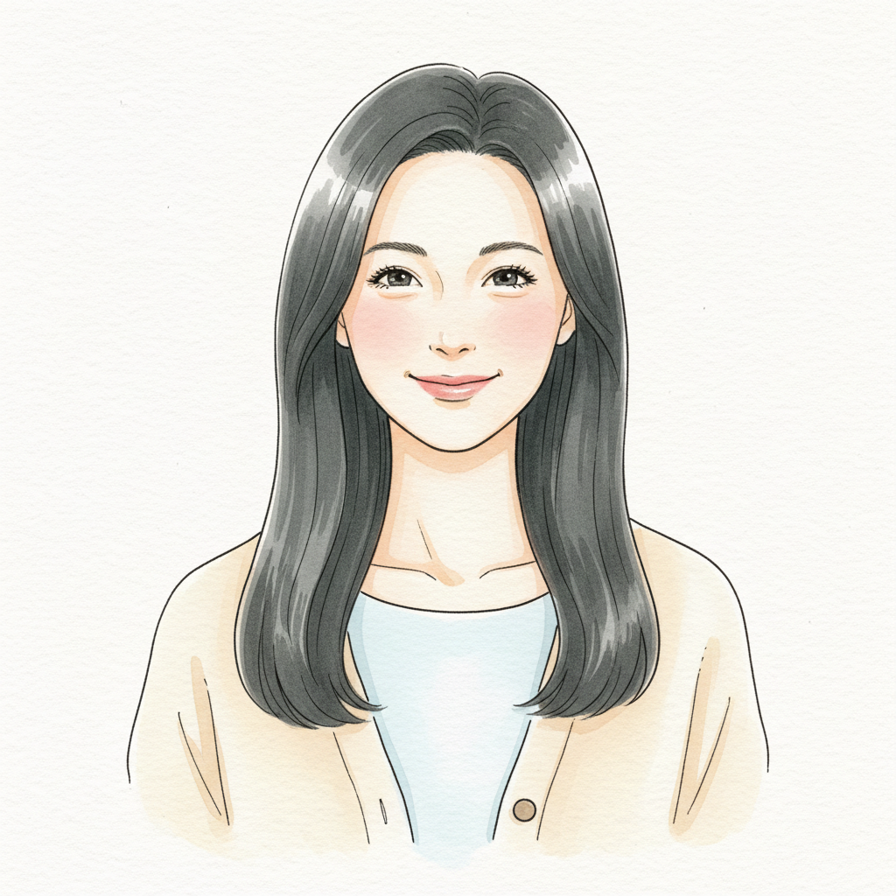
M.Nさん
どんな自分も否定されず、帰ってこれる心のよりどころがある
落ち込んだ時や迷った時、心のよりどころが欲しい。そんな時に、優しく本質を教えてくれるのがAsahiさんです。
どんな自分でも否定されず、「一緒に生きよう」と言ってくれる安心感。ここには、帰ってこれる居場所があります。
サロンについて
総フォロワー数26万人の心理学インフルエンサー
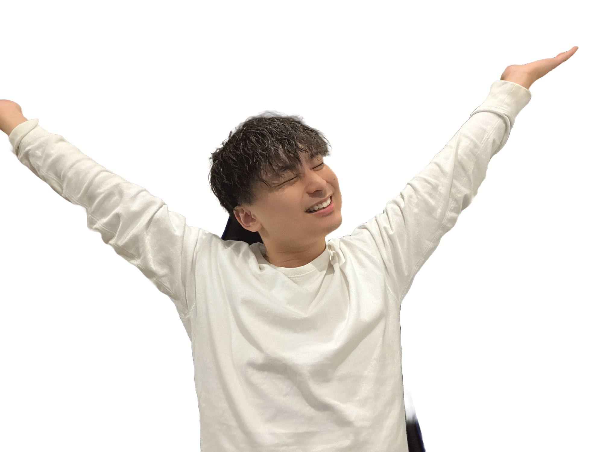
学生時代の6年間はいじめに遭い、家庭では難病の兄と不登校の妹を見て育ちました。「人はなぜ、こんなにも生きづらいのだろう」——その問いが、僕の出発点です。
大学で心理学を学び、出した答えはひとつ。「変わらないと、このままだ」。資格や肩書に頼らず、人の心を軽くする方法だけを実践してきました。
かつての僕と同じように、誰にも言えない苦しさを抱えている人がいます。「もう一人じゃない」と思える場所をつくる。それが、Asahiサロンを運営している理由です。
メディア掲載
共感
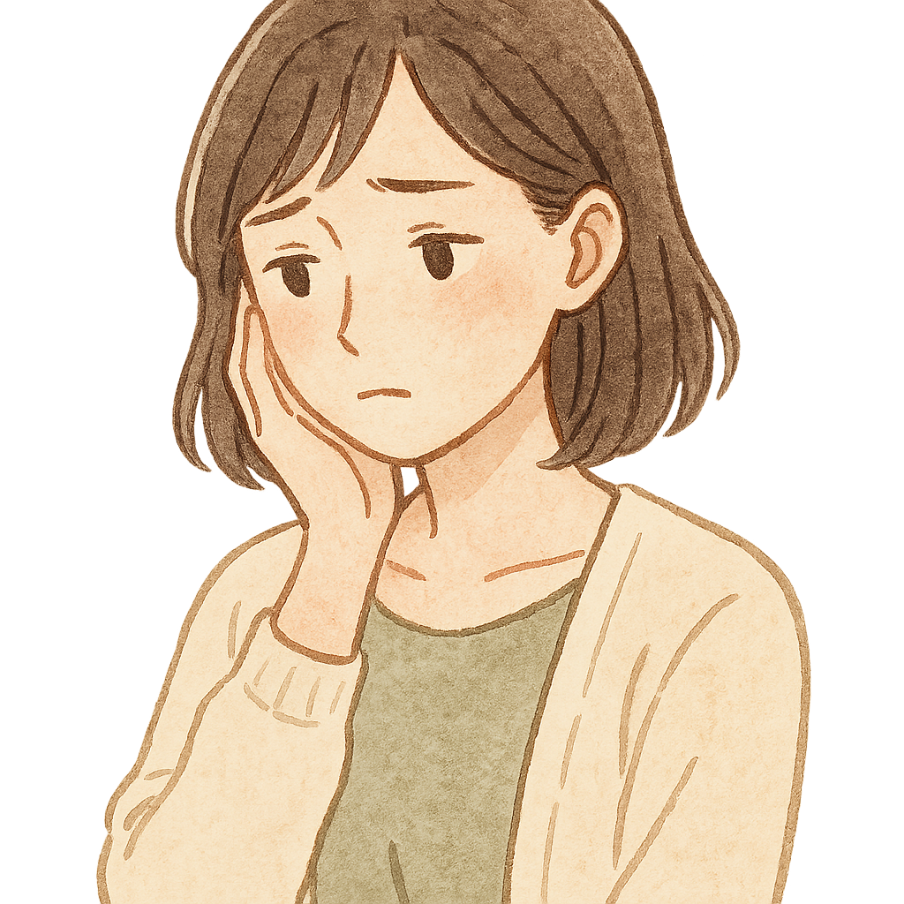
そんなあなたへ。
実は僕も同じでした。
いつも誰かに嫌われる。
自分の味方なんて誰1人いない。
そう思って生きてきました。
でもある時、気づいたんです。
「行動しないと、今のままだ」と。
サロンで生まれる、未来
スペックではなく、「変わった自分」を一緒につくっていきます。
Asahiサロンの特徴
さらに、個別悩み相談（予約制） / 一緒に仕事ができる / 定期オフ会・食事会 / 過去100本以上の動画見放題 / 月1のクエ鍋セット なども。
Asahiサロンで得られるもの
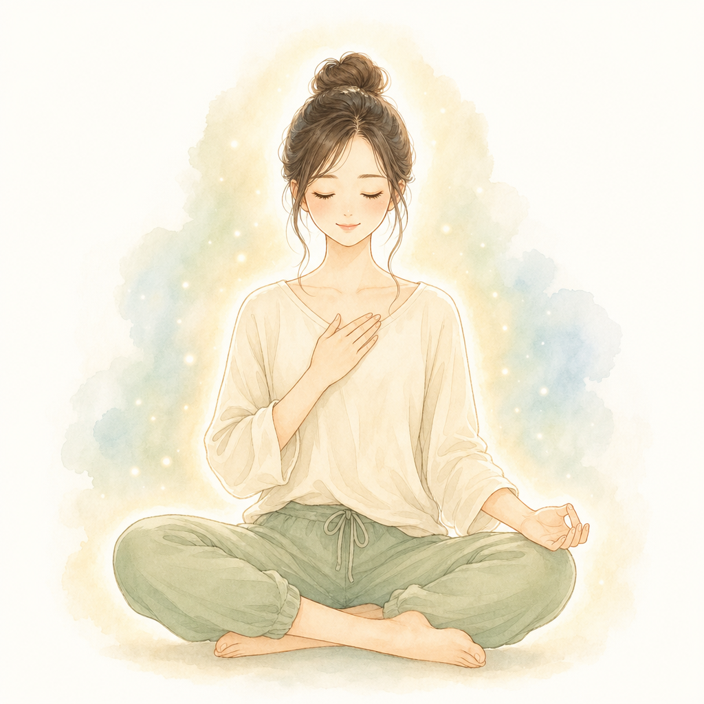
薬やカウンセリングに頼らなくても、自分の感情を自分で扱えるようになる。揺れない芯が、内側に育っていきます。
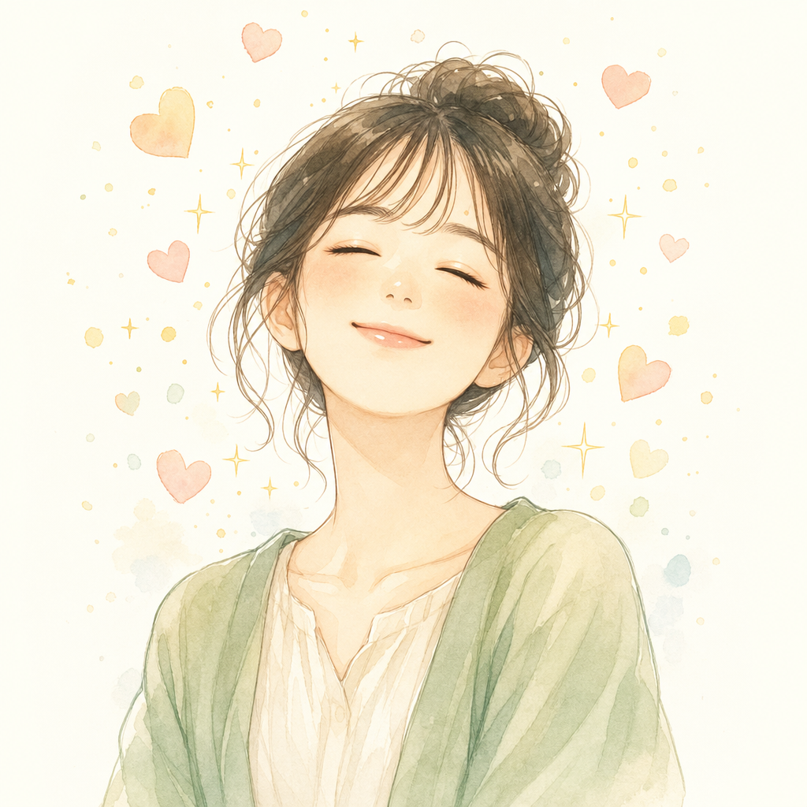
毎日見るもの、関わる人が変わる。3ヶ月もすれば、何が起きても幸せを感じられる脳が、知らぬ間に育ちます。
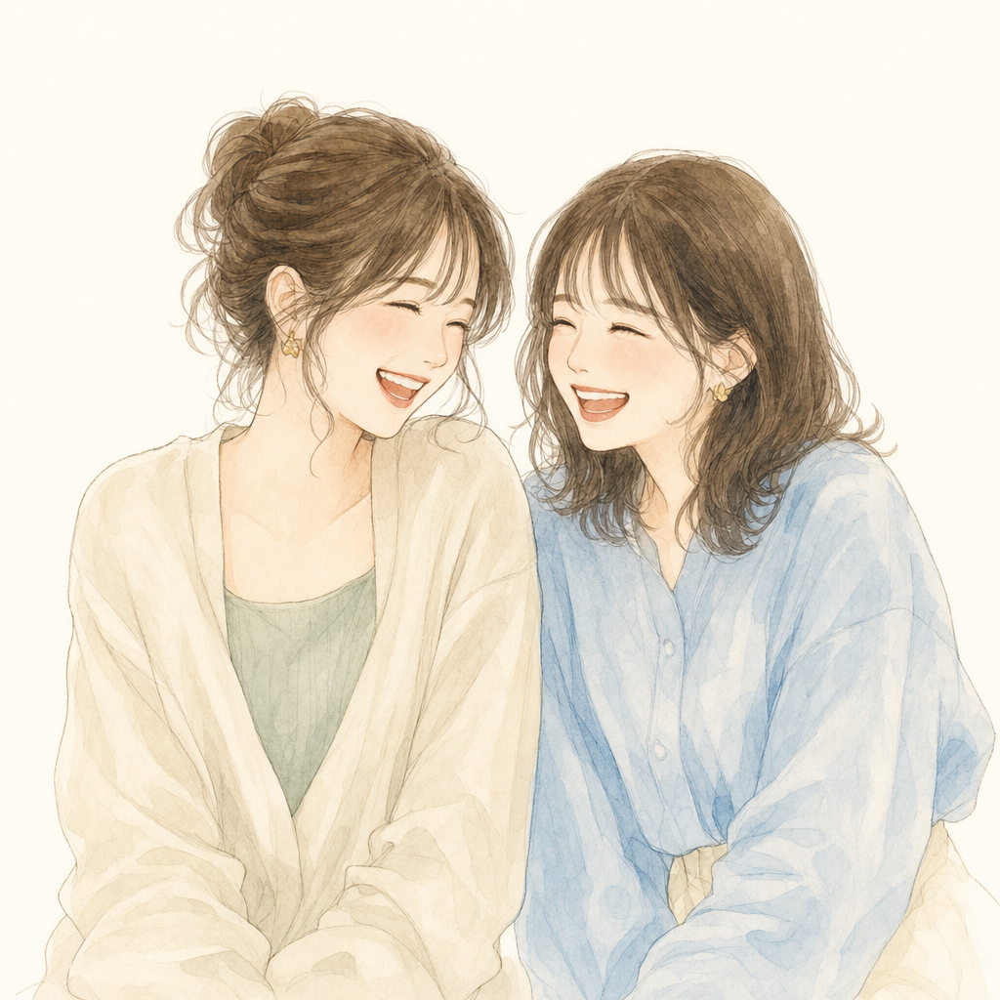
なぜか人に好かれる。なぜか嫌われない。人間関係の概念そのものが、180度変わっていきます。
料金プラン
| スタンダード 月額 ¥5,000 1日 約167円(税込) | 審査制・限定10名 VIP プレミアム 月額 ¥10,000 1日 約333円(税込) | |
|---|---|---|
| LINEグループに参加 | ✓ | ✓ |
| 月1 サロンライブ + 質問券 | ✓ | ✓ |
| Asahi MY GPT の利用 | ✓ | ✓ |
| 伝説の Asahi 日記の利用 | ✓ | ✓ |
| Asahiと直接Zoom相談 | — | ✓ |
Asahiの信頼
クレームどころか、
変わらなかった人は誰ひとりいません。
全員が、幸せになる。
それが Asahiサロン です。
お客様の声
VOICE

M.Nさん
落ち込んだ時や迷った時、心のよりどころが欲しい。そんな時に、優しく本質を教えてくれるのがAsahiさんです。
どんな自分でも否定されず、「一緒に生きよう」と言ってくれる安心感。ここには、帰ってこれる居場所があります。
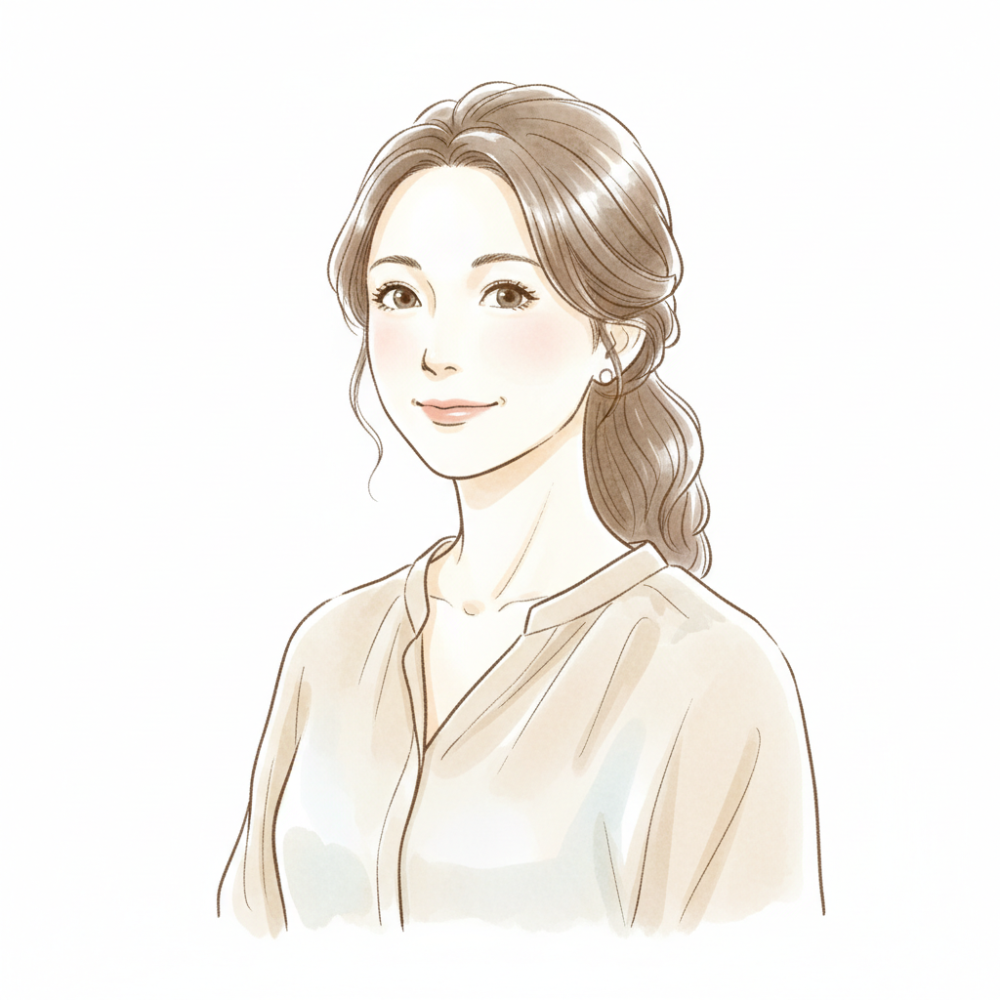
M.Mさん
職場の人間関係に疲れていた時、偶然出会ったインスタLIVE。その丁寧な姿に惹かれ、サロンに入りました。
「前向きになれない日があってもいい」そう言ってくれる場所で、どんな自分も受け入れられました。弱さに寄り添ってくれる、大切な居場所です。
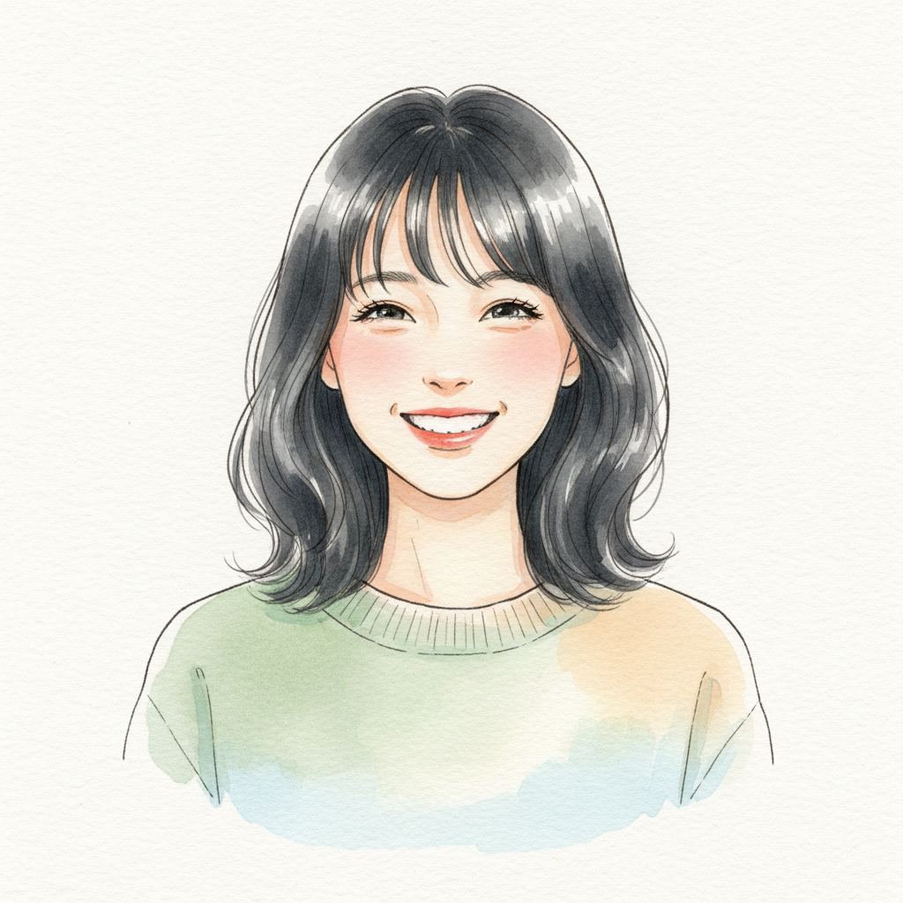
S.Mさん
落ち込んでいた時に出会い、転換期だと感じて入会。Asahi 日記で思考が変わり、メンバーの言葉に支えられながら、自分も少しずつ変化。
どんな自分でも受け入れてもらえる安心感と、前に進む勇気をもらえました。入って本当に良かった場所です。
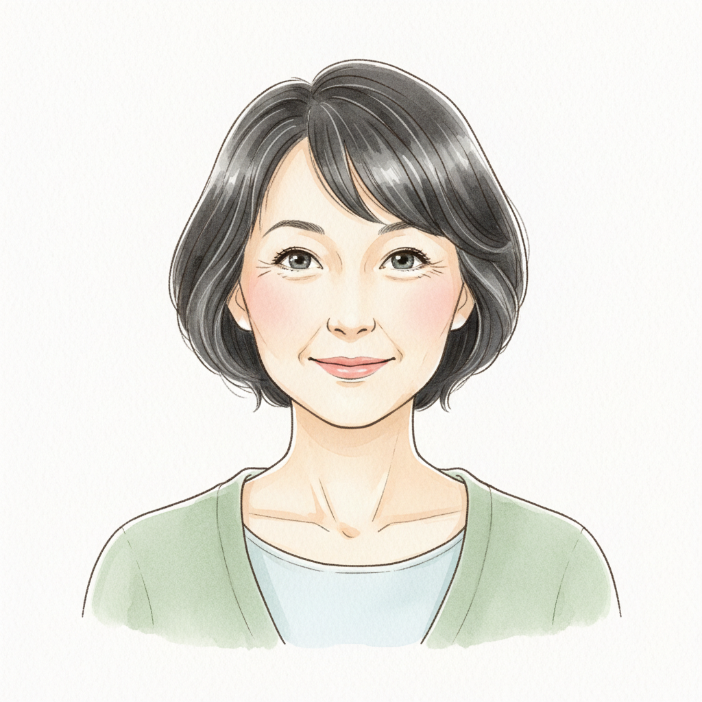
H.Mさん
偶然出会ったAsahiの動画に心を打たれ、LIVEでの一人ひとりへの丁寧な対応に惹かれました。人への不信感やいじめの経験がある中で、「信じてみたい」「自分を変えたい」と思いサロンへ。
数ヶ月前の自分では想像できないほど前向きになれました。Asahi先生は、人生を変えるきっかけをくれた存在です。
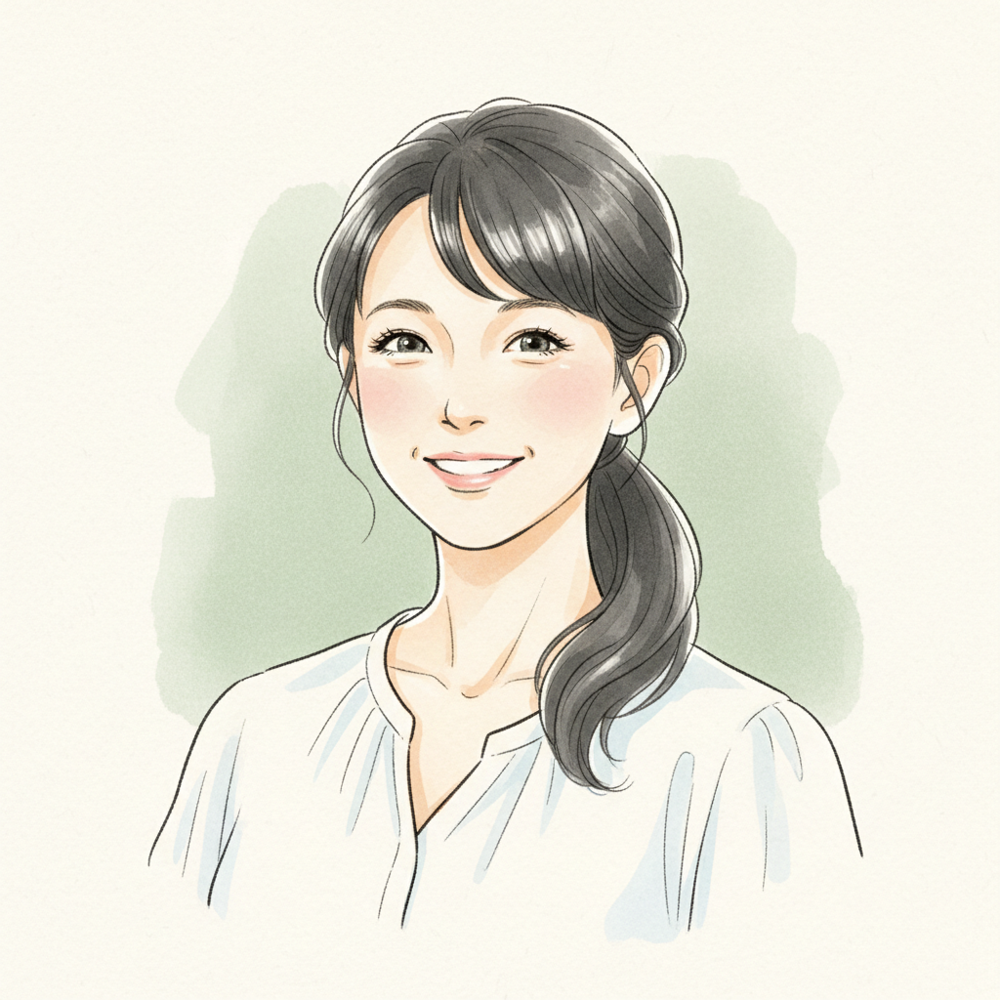
M.Yさん
心の病気で苦しむ中、Asahi先生の言葉に救われ、サロンへ。「ここにいていい」と思える安心をもらい、少しずつ変化を感じました。
気づけば薬も減り、「笑顔が増えた」と言われるほどに。あの一歩は、間違いなく人生を変える一歩でした。
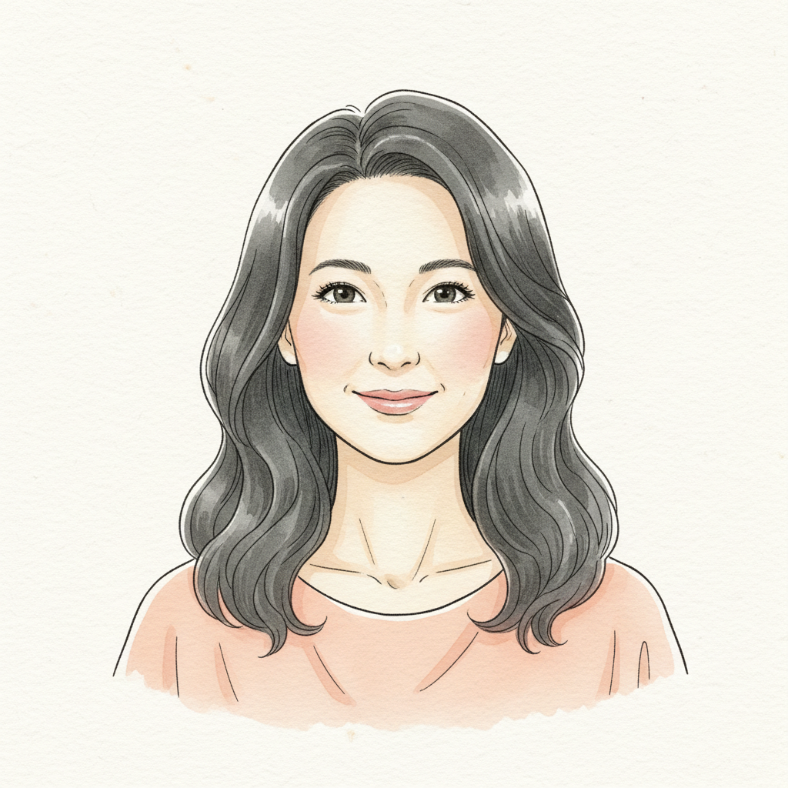
M・Fさん
あさひ君の動画は以前から見ていて、心理学の内容が心に響いていました。サロンに入って、コーチングで親身に話を聞いてくれて、前向きになれる時間に。
会社でも「前よりポジティブになった」と言われるように。ネガティブ100%だった自分が、少しずつ変われています。
よくある質問
A. ボタン1つで必要情報のみ入力していただいたら即参加できます！
A. はじめの3か月は解約不可です。4か月目以降は、いつでも解約可能です。
A. 大丈夫です。毎日の参加が必須ではありませんので、ご自身のペースでご参加ください💫
A. もちろんです！VIPメンバーで月1でAsahiと話したいから参加される方も多くいます！強制事項などはないので、のびのびみんなで参加しています💫
A. どんな悩みを持っている人でも絶対に変われます！入ったらわかります笑
A. こちらは公開できません。また、プレミアムは枠はすぐになくなってしまいます。
A. もちろん、ご参加いただけます。最近は男性の方も増えています。
今のままで、いいですか？
「変わりたい」と思った今が、一番のタイミングです。
まずは一歩、踏み出してみてください。
あなたの1年後は、想像もつかない自分に
一人で抱え込む前に、
まずはお気軽にどうぞ。
詳細とご質問の回答をお送りします。
※ このサロンは定員が満員になった場合、一気に封鎖いたします。
お問い合わせ時に、エラーが出た場合は、すでに定員オーバーとなっていますのでご了承ください。